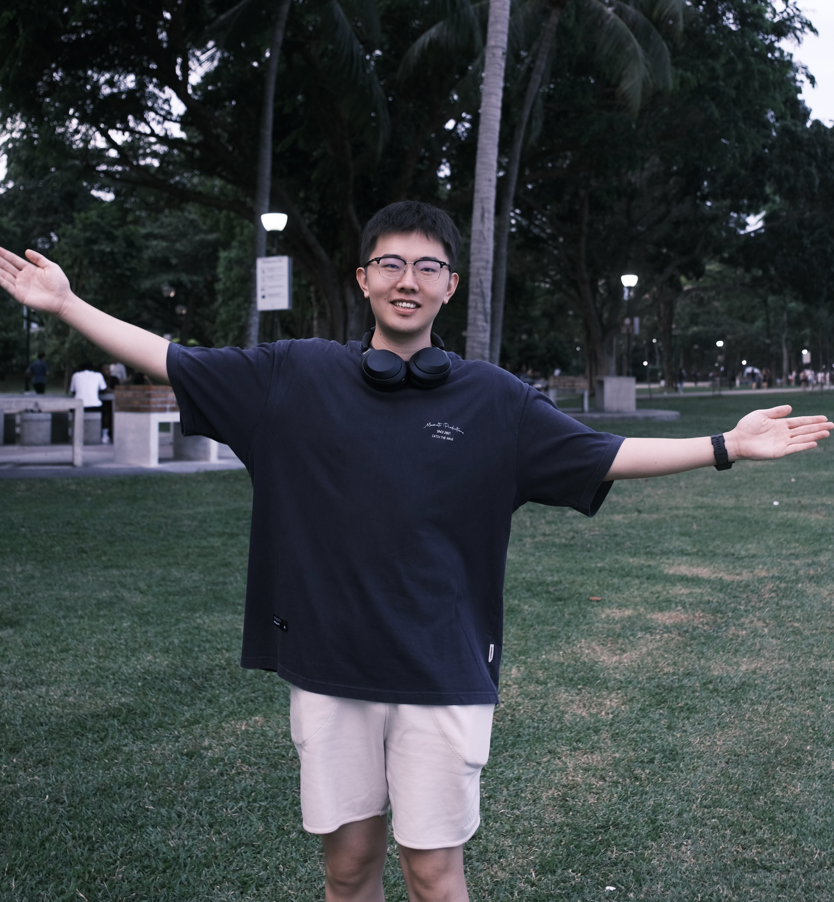
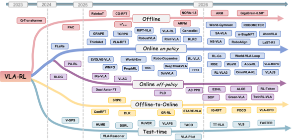
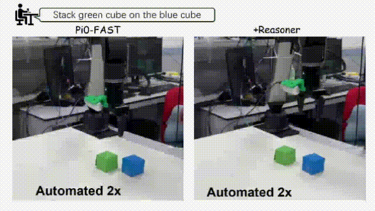
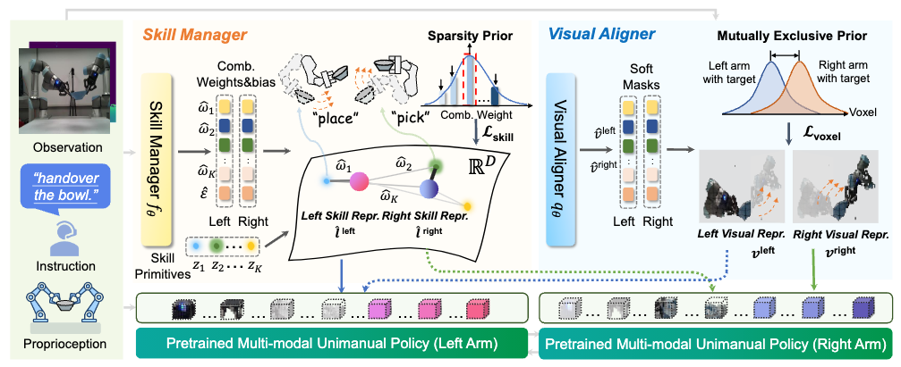
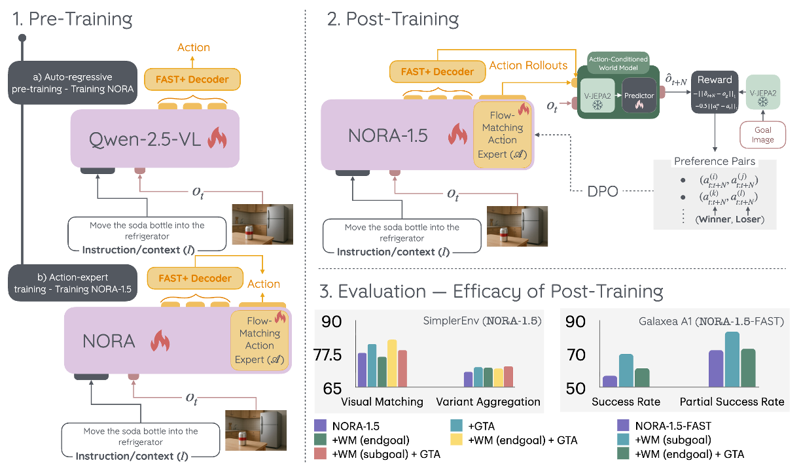
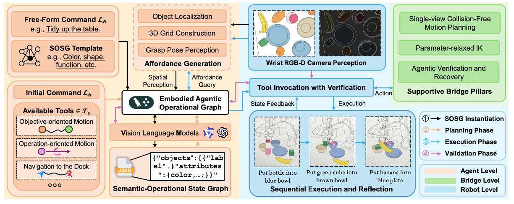
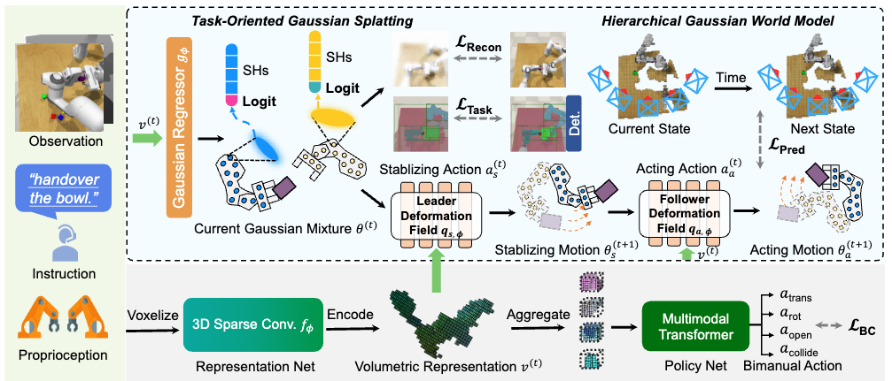

|
Deng Haoyuan (邓皓元)
I'm a first-year PhD student at Nanyang Technological University, supervised by Prof. Ziwei Wang in the PINE Lab. My research focuses on Embodied AI, with interests in Real-World Reinforcement Learning, Bimanual Manipulation, and Imitation Learning. I work on Robot Foundation Models to enable robots to generalize across diverse tasks. |
 |
{kind=link}
News
|
ResearchI'm interested in Real-World Reinforcement Learning, Bimanual Manipulation, Imitation Learning, and Robot Foundation Models. |
Selected Publications* indicates equal contribution |
|
|
UniIntervene: Agentic Intervention for Efficient Real-World Reinforcement Learning
Haoyuan Deng, Yitong Gao, Yudong Lin, Haichao Liu, Zhenyu Wu, Ziwei Wang† Under Review project page / arXiv An autonomous intervention system that replaces frequent human corrections in robot RL, using a value-aware critic to detect unproductive rollouts and a memory-guided recovery policy to restore progress. |
|

|
E2HiL: Entropy-Guided Sample Selection for Efficient Real-World Human-in-the-Loop Reinforcement Learning
Haoyuan Deng, Yudong Lin, Yuanjiang Xue, Haoyang Du, Qianzhun Wang, Boyang Zhou, Zhenyu Wu, Ziwei Wang† RA-L, 2026 project page / Paper / Code A sample-efficient human-in-the-loop RL framework using entropy-guided influence functions to actively select informative training samples. |

|
SafeBimanual: Diffusion-based Trajectory Optimization for Safe Bimanual Manipulation
Haoyuan Deng, Wenkai Guo, Qianzhun Wang, Zhenyu Wu, Ziwei Wang† CoRL, 2025 project page / arXiv / Code A test-time trajectory optimization framework for any pre-trained diffusion-based bimanual manipulation policies, which imposes the safety constraints on bimanual actions. |
|
 |
A Survey on Reinforcement Learning of Vision-Language-Action Models for Robotic Manipulation
Haoyuan Deng*, Zhenyu Wu*, Haichao Liu*, Wenkai Guo, Yuquan Xue, Ziyu Shan, Chuanrui Zhang, Bofang Jia, Yuan Ling, Guanxing Lu, Ziwei Wang† TechRxiv, 2025 Paper / GitHub 
The first comprehensive survey on reinforcement learning of vision-language-action models for robotic manipulation. |
|
 |
VLA-Reasoner: Empowering Vision-Language-Action Models with Reasoning via Online Monte Carlo Tree Search
Wenkai Guo*, Guanxing Lu*, Haoyuan Deng, Zhenyu Wu, Yansong Tang, Ziwei Wang† ICRA, 2026 project page / arXiv / Code A plug-in framework that augments vision-language-action models with long-horizon planning via online Monte Carlo Tree Search and kernel density estimation-based confidence sampling. |
|
 |
AnyBimanual: Transferring Unimanual Policy for General Bimanual Manipulation
Guanxing Lu*, Tengbo Yu*, Haoyuan Deng, Season Si Chen, Yansong Tang†, Ziwei Wang ICCV, 2025 project page / arXiv / Code A framework designed to transfer pre-trained unimanual manipulation policies to multi-task bimanual manipulation with few bimanual demonstrations. |
|
 |
NORA-1.5: A Vision-Language-Action Model Trained using World Model- and Action-based Preference Rewards
Chia-Yu Hung, Navonil Majumder, Haoyuan Deng, Liu Renhang, Yankang Ang, Amir Zadeh, Chuan Li, Dorien Herremans, Ziwei Wang, Soujanya Poria Under Review arXiv A vision-language-action model trained with preference rewards derived from world model predictions and action quality assessments, enabling more robust and generalizable robot manipulation. |
Other Publications |
|
|
 |
UniManip: General-Purpose Zero-Shot Robotic Manipulation with Agentic Operational Graph
Haichao Liu, Yuanjiang Xue, Yuheng Zhou, Haoyuan Deng, Yinan Liang, Lihua Xie, Ziwei Wang† Under Review arXiv A general-purpose zero-shot manipulation framework using an agentic operational graph to decompose and execute complex manipulation tasks without task-specific training data. |
|
 |
ManiGaussian++: Dynamic Gaussian Splatting for Multi-task Bimanual Manipulation
Tengbo Yu*, Guanxing Lu*, Zaijia Yang*, Haoyuan Deng, Season Si Chen, Jiwen Lu, Wenbo Ding, Guoqiang Hu, Yansong Tang†, Ziwei Wang IROS, 2025 arXiv / Code A novel framework that addresses the challenges of multi-task bimanual manipulation through hierarchical Gaussian world modeling. |

|
MAP-VLA: Memory-Augmented Prompting for Vision-Language-Action Model in Robotic Manipulation
Runhao Li, Wenkai Guo, Zhenyu Wu, Changyuan Wang, Haoyuan Deng, Zhenyu Weng, Yap-Peng Tan, Ziwei Wang† ICRA, 2026 arXiv A plug-and-play memory-augmented framework for frozen VLA models that constructs a memory library from demonstrations and retrieves relevant memories via trajectory similarity matching for long-horizon manipulation. |
Experiences |
|
A*STAR Advanced Remanufacturing and Technology Centre (ARTC) Senior Scientist Intern May 2024 – Sep 2024 Singapore |
Academic Services
|
Honors and Awards
|
|
|